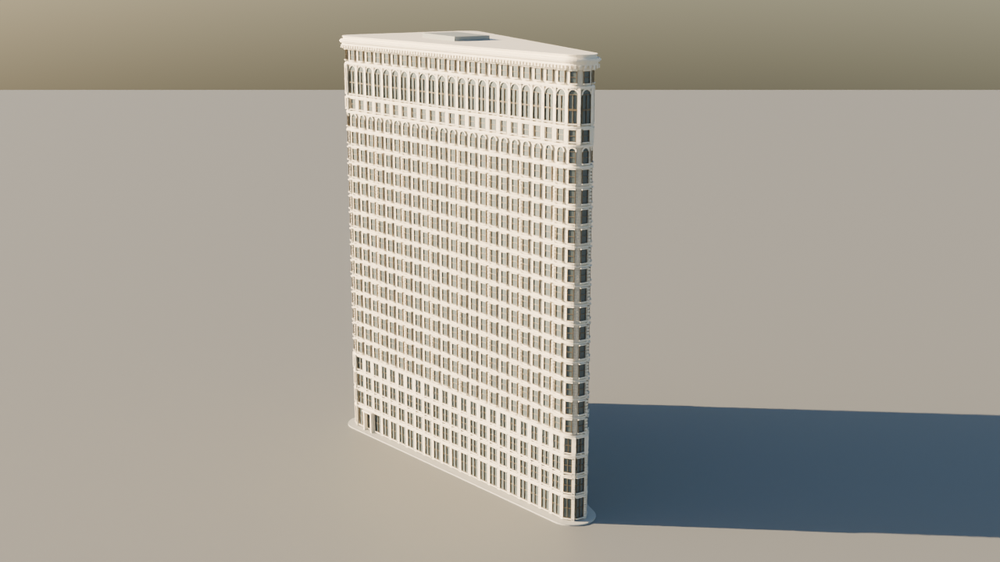

AGILE LENS / PHOTO TO EDITABLE GEOMETRYA familiar silhouette.
A new way to build.
Eight reference photos guided an editable Flatiron model in Blender, with GPT-6 Astra driving a live tool and visual review loop.

View in your spaceWatch the 29-second photo/model showcase. This is a reconstructed process presentation, not an original timelapse.
Compare the textured material candidate · Build the native viewer
On Apple Vision Pro, open this page in Safari and tap the model. Or download the USDZ and open it from Files. This is an approximately one-metre tabletop model.
Photo-guided approximation: dimensions and sculptural details include artistic guesses. The image above is a Cycles render; native headset lighting and material appearance will differ. Headset appearance has not yet been validated.
Get the Blender file and replayable workflow · Read the token receipt